Đối chiếu mẫu Mobbin — thongphan.com hai con đường
Mỗi hàng ghép ảnh chụp thật của bản dựng tĩnh (out/, Chrome cục bộ, 13/10/2026) với mẫu Mobbin theo spec mục 8. Ảnh của mình nằm trong ours/, tạo lại bằng node scripts/qa-mobbin-crops.mjs.
Ảnh mẫu Mobbin không được tải về hay nhúng vào đây (đường dẫn ảnh của MCP hết hạn và ảnh thuộc quyền của Mobbin/chủ trang). Mỗi mẫu có liên kết mobbin_url để mở bản gốc. Mọi mẫu đã được xem trực tiếp qua Mobbin MCP ngày 13/10/2026; đây là ảnh tĩnh nên không suy ra chuyển động từ mẫu.
Khớp = lấy đúng cấu trúc của mẫu. Phỏng theo = lấy cơ chế nhưng đổi bố cục có chủ đích, lý do ghi trong hàng.
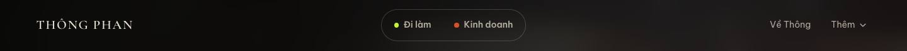
Công tắc nhóm người đọc trên header
Phỏng theo- Klarna — b955d30d
Klarna đặt "For shoppers | For business" thành dòng chữ nhỏ trên cùng. Mình giữ cơ chế hai nhóm người đọc nhưng làm thành nút chia đoạn (segmented control) dạng viên thuốc ở giữa header, tô màu theo nhánh đang xem, vì hai con đường là trục chính của cả trang. Trên mobile công tắc chuyển vào menu.
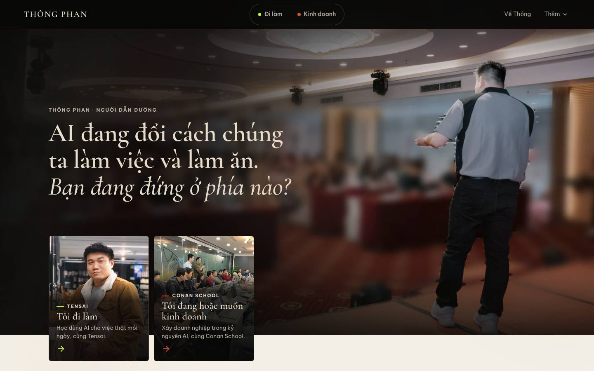
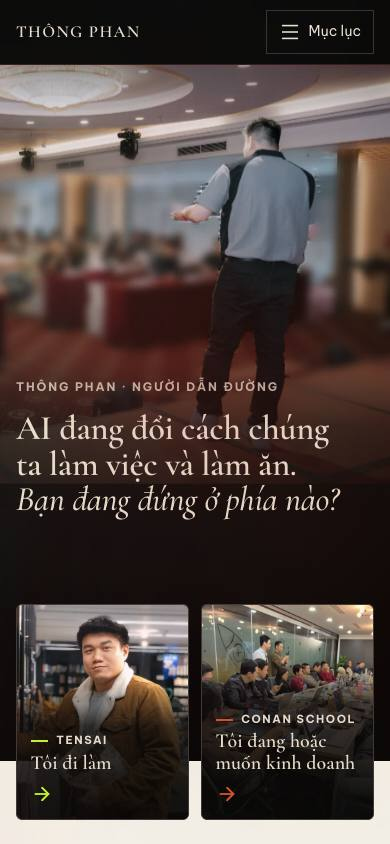
Màn hình đầu trang chủ và hai cửa
Phỏng theo- Square (ảnh tràn viền, tiêu đề lớn góc trái) — 29337e63
- Contra (hai lựa chọn cạnh nhau) — 0e71cc83
- Seed (panel ảnh có tiêu đề trong ảnh) — 2787e930
Lấy ảnh tràn viền và tiêu đề lớn góc trái của Square, với ảnh thật của Thông ở vai người dẫn đường. Seed và Contra chia hai nửa màn hình cho hai lựa chọn; mình làm hai cửa thành thẻ ảnh đè lên mép dưới màn hình đầu, nhỏ hơn (khoảng 242px ở 1440) để mắt người đọc gặp người dẫn đường trước rồi mới chọn đường. Cả hai cửa vẫn nằm trong màn hình đầu ở 1440×900 và 390×844 (đã kiểm bằng scripts/qa-two-path.mjs).
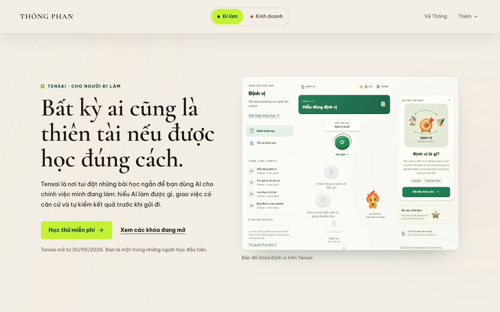
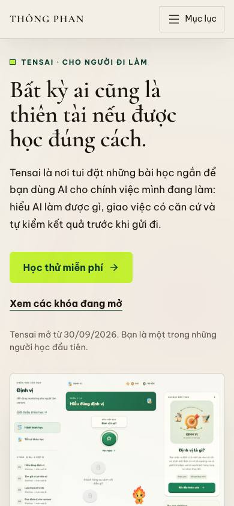
Màn hình đầu /tensai
Phỏng theo- Square, màn hình đầu chia đôi (mẫu trong spec) — 2db28706
- PayPal (gần nhất khi đối chiếu) — 0894c801
Square dùng hai nửa ảnh với chữ ở giữa. Mình giữ ý chia đôi nhưng đặt chữ bên trái và ảnh chụp giao diện thật của learn.thongphan.com bên phải, vì người đi làm cần thấy sản phẩm họ sẽ dùng. Bố cục cuối cùng gần PayPal 0894c801 hơn Square.
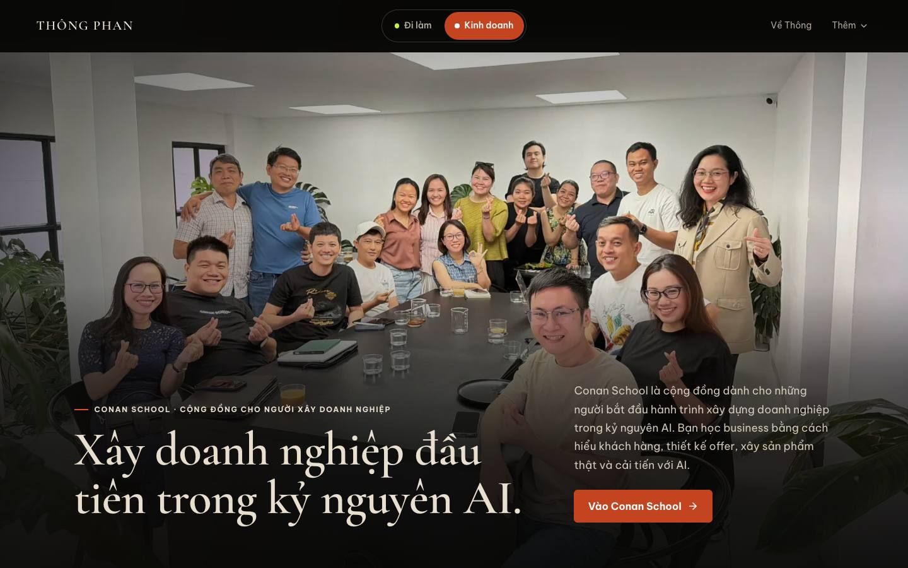
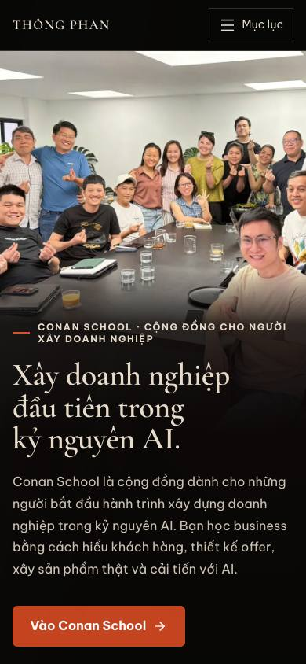
Màn hình đầu /conan
KhớpĐúng nhịp Rivian: ảnh lớn tràn viền, chữ ít. Ảnh là buổi học thật của lớp Conan; tiêu đề ở góc dưới trái, mô tả và CTA ở góc dưới phải, lớp phủ ink để chữ đủ tương phản. Lúc đối chiếu, tìm kiếm không trả lại cb7032a4 nên so với a67b1738 cùng trang Rivian.
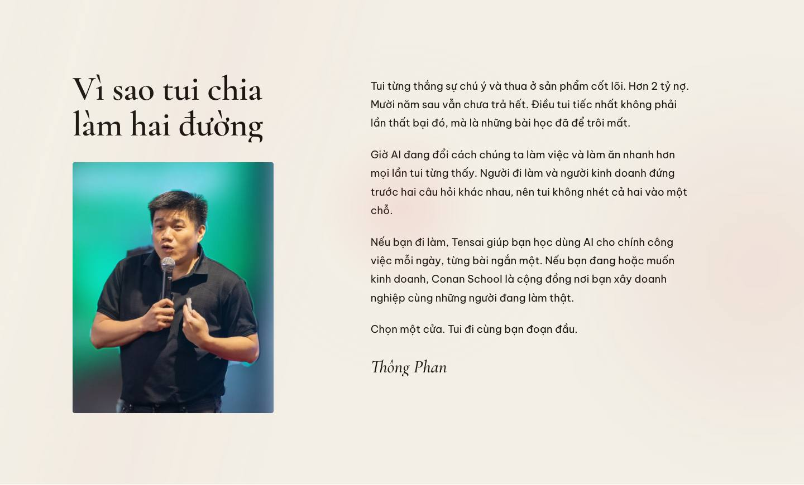
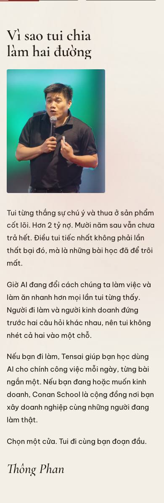
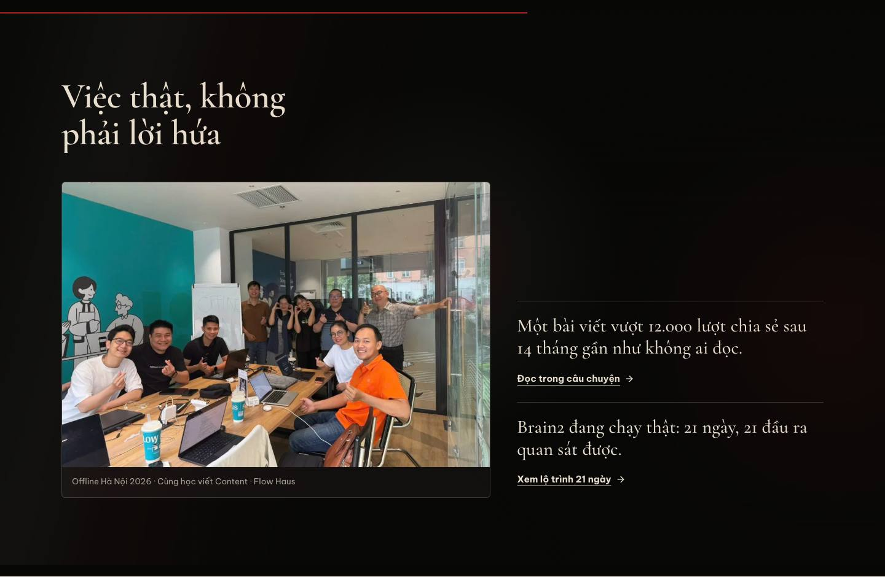
Chú thích ảnh và sự kiện
KhớpChú thích nằm dưới ảnh theo kiểu Aino, một dòng meta theo kiểu Pentagram: tên sự kiện · nội dung buổi · địa điểm. Chỉ in năm khi năm có trong tên sự kiện, không in ngày cụ thể. Hai mẫu này được xem lúc viết spec, chưa xem lại cạnh ảnh chụp này.
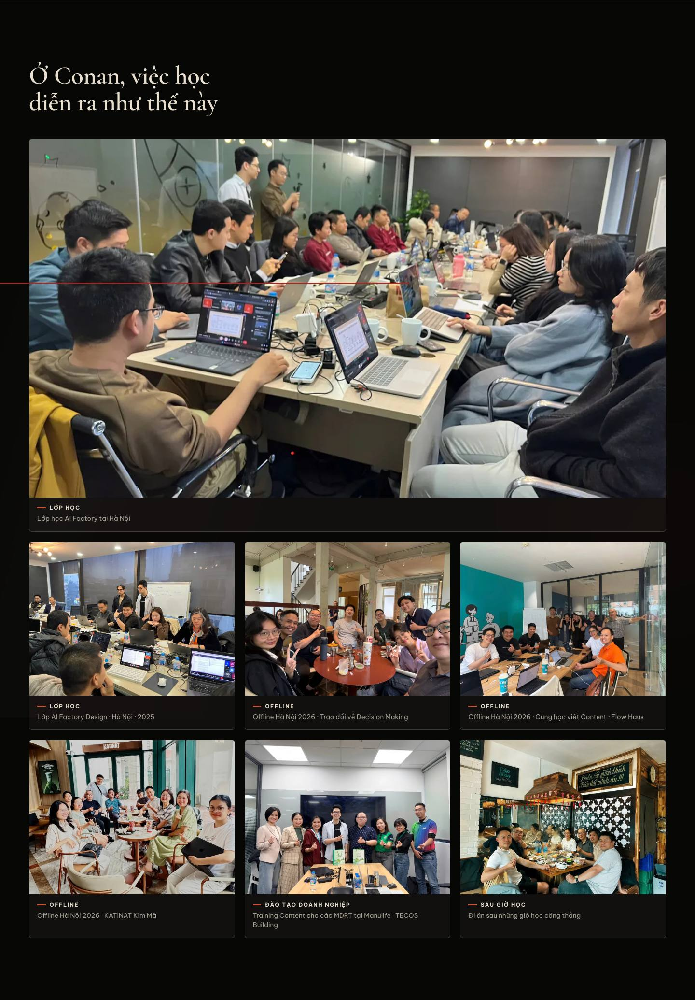
Gallery lớp học
Khớp- Plain — 6849b42b
Nền tối, một ảnh dẫn rộng, lưới ba cột ảnh thật, chú thích nhỏ có nhãn loại hoạt động. Khác Plain: chú thích nằm dưới ảnh thay vì chip đè lên ảnh, nên không che người trong ảnh và chữ luôn nằm trên nền tối đồng nhất.
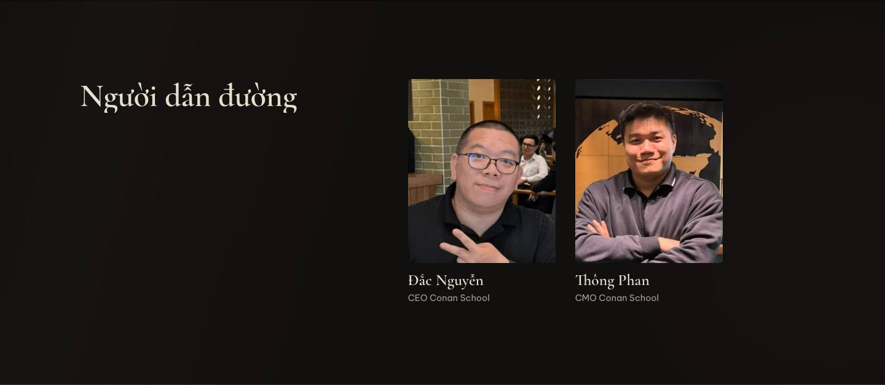
Người dẫn đường của Conan
Khớp- Upwork (mẫu trong spec) — 5cca6507
- ClassPass (mẫu trong spec) — 2c544a1e
- ClassPass, lưới lãnh đạo (xem lại khi đối chiếu) — de72c2f3
- Discord (xem lại khi đối chiếu) — 383bbdc4
Chân dung, tên và vai trò như lưới ClassPass; không có sao đánh giá hay con số. Vì chỉ có hai người, ở desktop tiêu đề chiếm cột trái (5/12) và hai chân dung ở cột phải để hàng không bị trống một nửa.
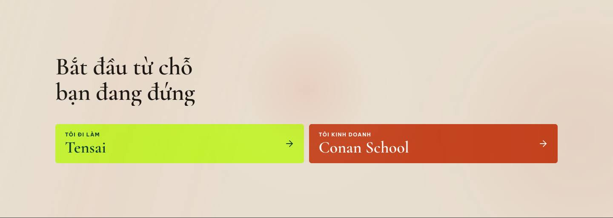
Ảnh toàn trang và màn hình đầu của mọi route/viewport nằm ở ../first/ (màn hình đầu, có commit) và ../full/ (toàn trang, chỉ tạo cục bộ). Kết quả kiểm tra máy: ../report.json. Đánh giá "khớp/phỏng theo" là nhận định của agent khi tự so ảnh; chưa phải duyệt thẩm mỹ của anh Thông.